HORT 281 :: Lecture 41 :: TUBEROSE

TUBEROSE
Scientific Name : Polianthes tuberosa L.
Family : Amaryllidaceae
Common Name : Tuberose
Hindi Name : Rajanigandha
Origin and History
Tuberose is a native of Mexico from where it spread to the different parts of the world during 16th Century. It is believed that tuberose was brought to India via Europe in 16th century.
Uses/Medicinal
They are use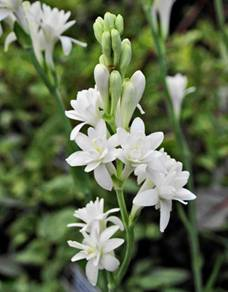d for making artistic garlands, floral ornaments, bouquets and buttonholes. The long flower spikes are excellent as cut flowers for table decoration. The flowers emit a delightful fragrance and are the source of tuberose oil which is used in high value perfumes and cosmetic products. Furthermore, fragrant flowers are added along with stimulants or sedatives to the favourite beverage prepared from chocolate and served either cold or hot as desired. The bulbs are reported to contain an alkaloid lycorine, which causes vomiting. The bulbs are rubbed with turmeric and butter and applied as a paste over red pimples of infants. Dried tuberose bulbs in the powdered form are used as a remedy for gonorrhoea. In Java, the flowers are eaten along with the juices of the vegetables.
Area and Distribution
Tuberose is cultivated in large scale in France, South Africa, North Carolina, USA and in many tropical and subtropical areas including India. In India, the commercial cultivation of tuberose is done mainly in Mysore, Devanhalli taluk (Karnataka), East Godavari, Guntur, Chitoor, Krishna, Distt. (Andhra Pradesh), Coimbatore and Madurai (Tamil Nadu), Pune, Thane, Sangli (Maharashtra), Bagnen, Kolaghat, Midnapore, Panskura, Ranaghat, Krishnanagar (West Bengal). At present the total area under tuberose cultivation in the country is estimated to be about 3,000 hectare.
Botanical Description
Tuberose is half-hardy, perennial, bulbous plant. Bulbs are made of scales and leaf bases and stem remains concealed within scales. Roots are mainly adventitious and shallow. Flowers have a funnel shaped perianth and are fragrant, waxy white, about 25 mm long. Stamens are six in number, ovary 3 locular, ovules numerous and fruits are capsule.
Climatic Requirement
In India, commercial cultivation of tuberose is confined to warm humid areas with average temperature ranging from 16° to 30°C. Tuberose is also grown in hilly areas up to 1200 to 1500 meter height. Moist or humid and temperature are the two main factors responsible for the increasing or decreasing the production. Temperature over 40°C leads to decrease the length of spike and quality of flowers. Likewise, fall in temperature or incidence of frost damages the plant and the flowers. It prefers sunny situation and should not be grown on shady or semi-shady situation which drastically reduces the flower yield.
Tuberose although not strictly photosensitive, long-day exposure promotes vegetative growth as well as early emergence of the first flower spike and also increases the length of flower spike. A day length of 16 hours promoted growth and flowering.
Soil Requirement
Tuberose should be grown in well-drained place, as it cannot tolerate water logging even for a short period. Tuberose is grown in wide range of soils from light sandy to clay soils including those affected by salinity and alkalinity conditions. Fertile loamy and sandy having pH range from 6.5 to 7.5 with good aeration and drainage are ideal for tuberose cultivation.
Varieties: There are four types of tuberose
Single: With one whorl of corolla and are highly scented which are chiefly used for concrete extraction. Concrete content has been observed to be 0.08 to 0.11 per cent. Loose flowers are used for making floral ornaments. Single, Kalyani Single, Shringar, Prajwal, Rajat Rekha, Hyderabad Single, Culcutta Single are main varieties
. 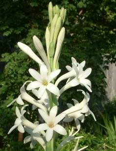
Semi-double: Bearing two to three whorls of petals, used for concrete extraction as well as cut flower.
| 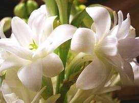 | 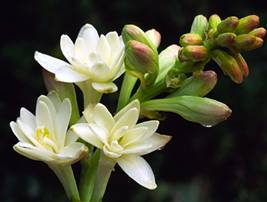 |
Double: This group comprises of varieties with more than three whorls. They are mainly used for cut flower and bouquet purpose. The main varieties are Double, Kalyani Double, Swarn Rekha, Hyderabad Double, Culcutta Double, Vaibhav & Suvasini.
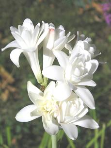
Variegated: In these varieties, leaves with white/yellow streaks are visible. National Botanical Research Institute, Lucknow has developed two variegated varieties Rajat Rekha & Swarn Rekha by gamma irradiation.
Rajat Rekha
- Single flowered type with silvery white streak along the middle of the leaf blade.
- It is a mutant evolved by irradiating bulbs of single flowered cultivar.
- Concrete content has been found to be 0.089 per cent.
- Double flowered type with golden yellow steaks along the margins of leaf.
- It is a gamma ray induced mutant, in which mutation occurred in chlorophyll synthesis resulting in change in leaf colour.
- Concrete content has been found to be 0.062 per cent.
- This variety has been developed form a cross between ‘Single x Double’.
- It bears single type of flowers on sturdy spikes.
- The flower bud is slightly pinkish tinged.
- Florets are bigger and appealing than ‘Calcutta Single’.
- Resistant to Meloidogyne incognita nematode.
- Loose flowers are ideal for making garland, while spikes can be used as cut flower.
- Yield of loose flowers is about 15,00 kh/ha per year, which is 40% higher than ‘Calcutta or Mexican Single’ and the concrete content of the Hybrid is at par with Mexican Single.
- Shringar is preferred by farmers and perfumery industries.
- A multi whorled variety developed form the cross between ‘Single’ x ‘Double’.
- Pure white flwers are bold and big, borne on a long spike.
- Spikes are best suited as cut flower.
- Suvasini recorded 25% more yield than cv. Double.
- IIHR, Bangalore has also evolved two more new varieties of tuberose namely Prajwal and Vaibhav recently.
- This hybrid which bears single type flowers on tall stiff spikes is from the cross ‘Shringar’ x ‘Mexican Single’.
- The flower buds are slightly pinkish in colour while the flowers are white.
- The individual flowers are large in size, compared to ‘Local Single’.
- It yields twenty per cent more loose flowers than ‘Shringar’.
- Recommended both for loose flower and cut flower purpose.
- The hybrid which bears semi-double flowers on medium spikes is from the cross ‘Mexican Single’ x IIHR – 2.
- The flower buds are greenish in colour in contrast to pinkish buds in ‘Suvasini’ and ‘Local Double’.
- Flowers are white.
- Spike yield is 50 per cent higher compared to ‘Suvasini’.
- Hence, recommended for cut flower purpose.
- The flower spikes are graded according to the stalk length, length of rachis, number of flowers per spike and weight of spikes.
- Straight and strong stem of uniform length and uniform stage of development are preferred.
- Flowers should be free from bruises and diseases and pests.
- Florets are graded according to their size for loose flowers.
- Treat the bulbs will 0.2% Bavistin before planting.
- The recommended doses of fertilizers must be applied.
- The bulbs of 1.5 -2.5 cm diameter should be planted in for better growth and harvesting.
- No hoeing/weeding should be done till the sprouting takes place.
- Crop is sensitive to water stagnation so ensure proper drainage or otherwise planting be done on bund.
Swarna Rekha
Shringar
Suvasini
Prajwal
Vaibhav
Field Preparation and Sowing
Preparation of field
The field should be ploughed deep to a good tilth by 2-3 ploughings (45 cm) and properly manures. The field is left for 15 days that destroys the weeds and insect-pest. Well rotten cow dung or farmyard manure, at the rate of 50 tonnes per hectare should be incorporated in the soil. After field preparation, the plots of appropriate size should be prepared.
Spacing
Bulbs are planted at a spacing of 30x20 cm or 20x20 cm at a depth of 4-6 cm. 40,000-50,000 bulbs are required for one acre planting of tuberose.
Propagation
Tuberose is propagated by bulbs. In general, bulbs having diameter between 1.5 and 2.5 cm are suitable for planting. About 1.25-1.5 lakh bulbs (800-900 kg) are required for planting one hectare.
| 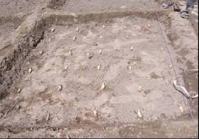 | 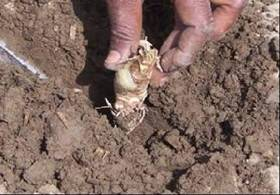 |
Seed treatment
These bulbs are first thoroughly cleaned and treated with Bavistin (0.2%) for 30 minutes. Dipping the bulbs in 4% solution of thiourea can break the resting period. Pre-plant storage of bulbs at 10°C for a period of 30 days to improve the plant growth, increased spike and flower yield.
Pre-planting treatment of bulbs with GA3, etherel or thiourea promoted early appearance of flower and produced highest number of longer spikes with maximum number of florets.
Season: Planting done in the month of March-April in plains and April-May in hills.
Nutrient Management
In general, a basal dose consisting of FYM @ 10 kg/sq m, single super phosphate and murate of potash each @ 80 g/sq m, 10-15 days prior to the planting of bulbs is recommended. Nitrogen @ 15 g/sq m should be applied in three split doses. First one-third dose is given at the time of planting of bulbs, second at 60 days after planting and the third when flowering starts.
Water and Irrigation Management
It is very essential to irrigate before planting to provide optimum moisture for sprouting and further irrigation should be avoided until the bulbs are sprouted. During summer, irrigation should be given at weekly interval or even earlier in case soil dries out and during winter at 10 days interval.
Weed Management
Manual weeding is effective and should be done at monthly interval.
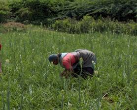
For chemical weed control, Atrazine @1.0-1.5 kg /ha in 1000 litres of water is sprayed immediately after planting of bulbs.
Pest Management
The important insects are thrips, aphids and weevil. Thrips and aphids are controlled by the spray of Rogor or Metasystox @ 1.75 to 2.0 ml/litre. The weevils can be controlled by the spray of Thiodon @ 2.0 mg/litre.
Bud borer (Helicoverpa armigera)
This can be controlled by the spray of endosulfan (0.2%), monocrotophos (0.2%) or Thiodan (0.5-0.8%).
Nematodes
Tuberose is damage by nematodes and resulting extensive yield losses. Nematodes like too-knot nematode (Meloidogyne incognita and M. javanica) and reniform nematode (Rotylenchulus renioformis) and also greasy steak caused by Aphelencoids besseyi have been reported to be responsible for complete wiping out of tuberose flower industry. Application of Furadon @ 2 g/plant or carbofuran @ 2-5 kg/ha, neem @ 1 tonne/ha controls nematode infestation.
Disease Management
Stem rot
The disease symptom is preceded by the appearance of prominent coarse mycelial masses on leaf surface at or near the soil level. The infection is caused by Sclerotium rolfsii. The disease can be controlled by soil application of brassicol or Zineb (20%) at the rate of 30 kg per hectare. Also, the incidence can be minimized by reducing soil moisture or planting at wider spacing.
Flower Bud rot
It is caused by Erwinia sp. Results in dry rotting of the buds with brown surched necrotic discoloration of peduncles. The diseased plants should be uprooted and destroyed. The disease can be controlled by the spray of Streptomycin (0.01%)
Leaf blight or Botrytis blight
Fungal disease caused by Botrytis elliptica. The disease can be controlled by spraying the plant with ammonical copper (2%) or Greeno (0.5%). The treatment should be repeated at 15 days interval.
Alternaria leaf spot
Fungal disease caused by Alternaria polyanth. The disease can be controlled by the spray of Mancozeb (0.2%) or Iprodione (0.2%) at 10 days interval.
Harvesting
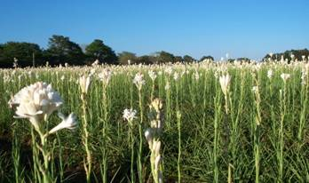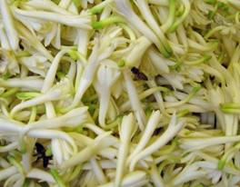
Flowering of tuberose starts 80 to 100 days after planting and flowering time is July onwards. Tuberose flowers all the year round.
Spikes are harvested at bud-burst stage preferably in the morning before sunrise or late in the evening by clipping with a sharp knife or secateurs that gives a clean cut. About 4-6 cm basal portion has to be left to allow the growth of bulb. The lower portion of the cut spikes immediately after harvest, are to be immersed in water for prolonging life of spikes. For loose flower purpose individual flowers are plucked early in the morning.
Lifting, Curing, and Storage of Bulbs
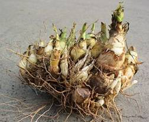Bulbs reach maturity at the cessation of flowering when the leaves become yellow and dry during winter (February-March) in North India. At this stage, irrigation is withheld and the soil is allowed to dry. The leaves are cut off at the ground level and the bulbs are dug out. After digging, the bulbs are lifted out and the adhering earth shaken off neatly and thoroughly. The offsets are then separated out by hand, which are used as seed-stock for the next season. The bulbs are the graded based on the size into mature (> 1.5 cm diameter) and immature (< 1.5 cm diameter). Cleaned and graded bulbs are placed on sheives to dry or cure. To hasten curing, artificial heat of 27o to 35o C may be applied. The bulbs must be stirred or have their position changed every few days to prevent fungal attack and rotting. The bulbs are also treated with 0.2 per cent Bavistin or mancozeb powder to prevent them from rotting. An ambient air temperature of at least 18oC for four to six weeks or exactly six weeks at 30oC stimulates the yield of commercial sized bulbs. Longer storage at 30oC advances flower spike yield but the quality of spike deteriorates and the bulb number decreases.
Yield
The yield of loose flowers/spike depends on variety, planting distance and climate condition prevailing in the area. One hectare of tuberose plantation yield 4-5 lakhs of spikes per year from single varieties, 10.5 tonnes/ha of loose flowers may be harvested. In addition, 20 tones/ha of bulbs may be harvested after 2-3 years.
Post Harvest Activities
Grading
Packing and Transport
For room decoration, long spikes are preferred and are sold in bundles. Each bundle contain 100 spikes. To avoid damage of the flowers and buds, the whole bundle should be wrapped in soft, white tissue paper or polythene. These bundles are packed in rectangular bamboo baskets lined with Hessian cloth.
For long distance transport, they are packed in square boxes or airy baskets but packing in cardboard boxes is more suitable which can be easily transported by rail, bus or by truck. Loose flowers are packed in bamboo baskets holding about 10-15 kg flowers and the baskets are covered with muslin cloth and are transported to the nearby wholesale market where they are sold by weight.
Holding solutions
A holding solution consisting of sucrose 2% + Al2(SO4)3 300 ppm was found best for increasing the post harvest life and quality of cut spikes of tuberose.
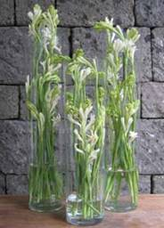
Extraction of Oil and Quality Control
The flower oil is extracted by effleurage and solvent extraction with petroleum ether. Freshly picked flowers, before they open are effleuraged. About 150 kg of flowers yield 1 kg of absolute of enfleurage which contains 11-15% of steam volatile oil. Extraction of tuberose flowers with petroleum ether yield 0.08 – 0.14 per cent of concrete. The concrete contains 3 – 5 per cent of a steam volatile oil. Out of the approximate total yield of 30,000 kg of loose flowers from one hectare, in three years, 27.5 kg of ‘concrete’ could be obtained. This concrete in turn will yield about 5.50 kg of absolute. One hectare of tuberose plantation may yield upto 12 kg of concrete.
Marketing and Export Potential
Graded spikes are usually stored less than 24 hours before they are packed and shipped to the markets. Most tuberose flowers are shipped in refrigerated trucks. Spikes must be held in an upright position.
Miscellaneous Information
Ratooning
In November-December, when the temperature drops, the leaves of the plants turn yellow and die and the plants undergo dormancy. Digging of bulbs should be done at this stage. With the increase in temperature the crop regains growth from the previously planted bulbs which is termed as ratooning. The ratoon crop results in more number of spikes but reduces number of florets, length of spikes and weight of flowers. Therefore, ratoon crop should be used only for loose flower or oil extraction purpose.
For ratooning in tuberose, the yellowing plants should be twisted from the ground level which leads to early maturing of bulbs. For the proper growth and development of plants, fertilizer dose as given in the main crop should be applied in two equal split doses in January-February and April. All other cultural practices should be done as in case of main crop. There is early flowering in ratoon crop as compared to main crop.
Important Tips and Best Practices for Crop Cultivation
1. What is the alkaloid present in the bulbs
2. Swarnd Rekha is bred by which institute
3. Mention the parentage involved in suvasini
4. Propagation method in tuberose
5. What is the solvent used for extraction of oil
| Download this lecture as PDF here |